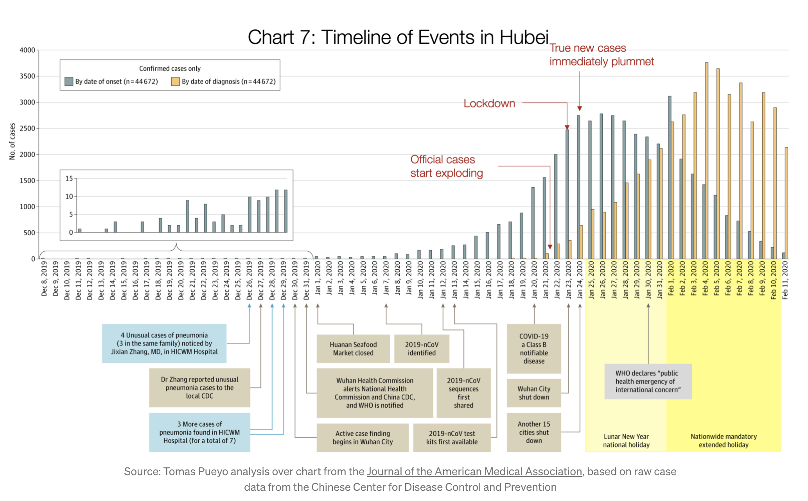
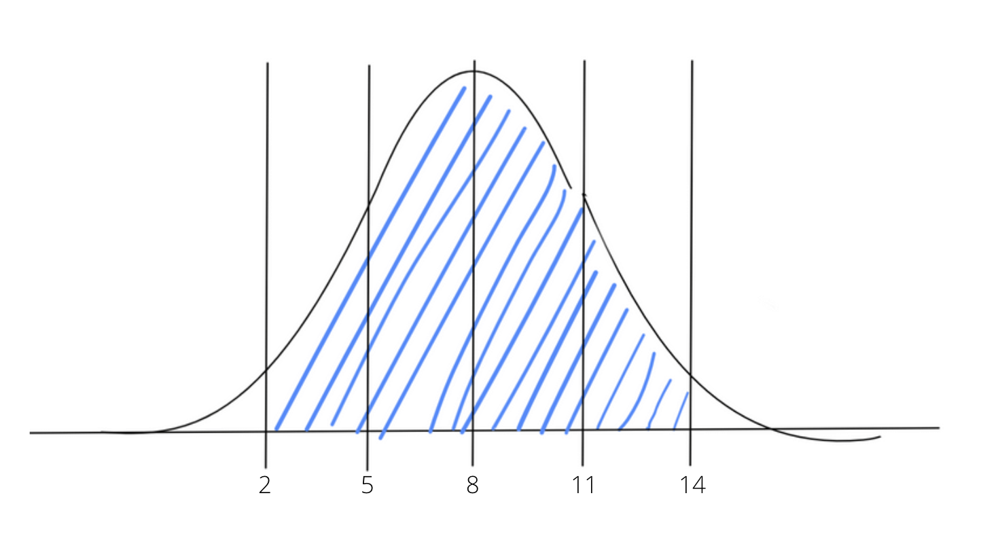
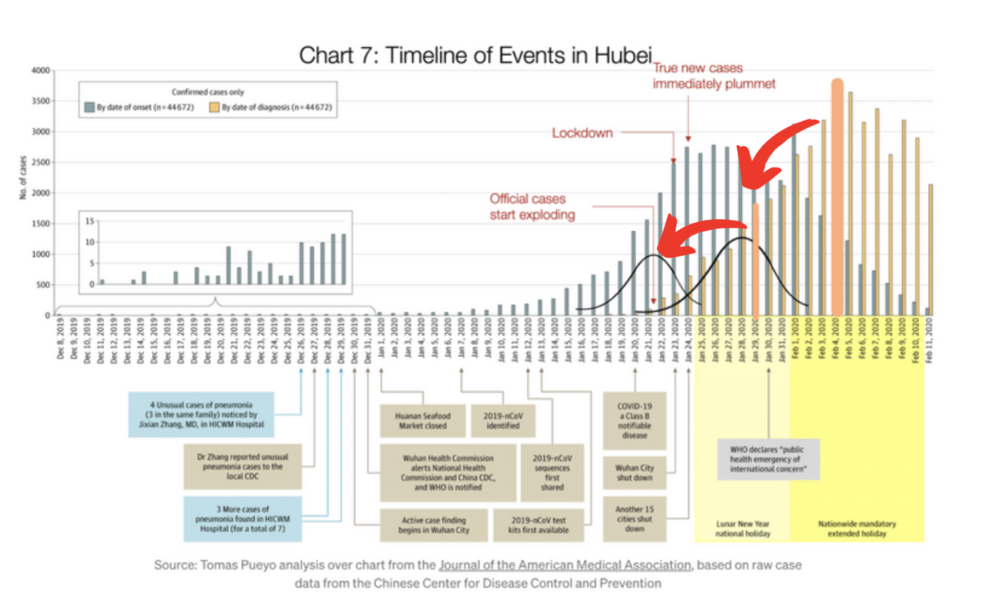
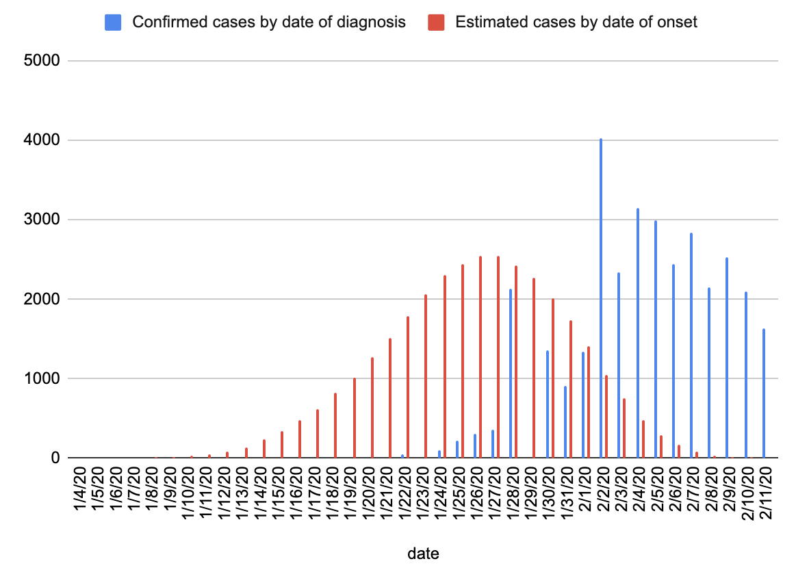
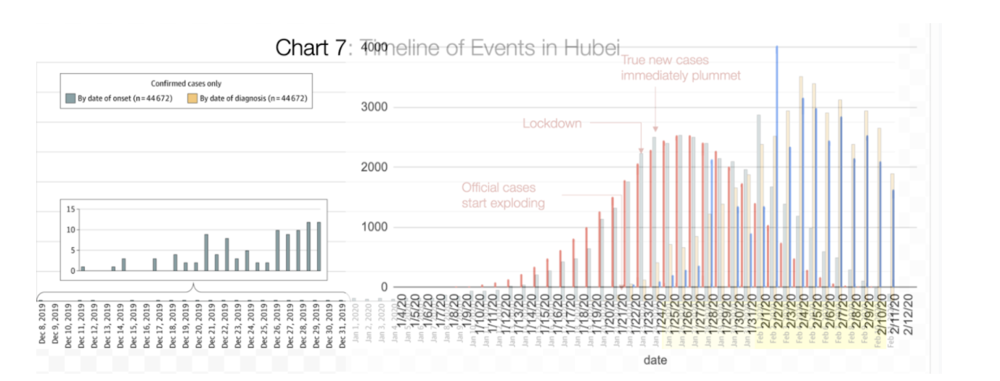

Modeling the Coronavirus
Estimating the date of exposure to the virus given the date of diagnosis By now, you’ve probably read Tomas Pueyo’s articles on the coronavirus. Remember this graph?

The above graph shows the number of confirmed COVID-19 cases in the province of Hubei, China, but it also shows the estimated date that each of these cases first contracted the virus. The graph clearly communicates why it was important for Hubei to lockdown on Jan. 23 — though there were less than a thousand confirmed cases at the time, the turquoise curve shows that the true number of cases was much higher.
The Chinese CDC collected this data by asking patients during their diagnosis when their symptoms started. Unfortunately, other countries have not followed this example and this two-sided dataset is not widely available.
So I tried to model the data for other countries, based on what is known about Hubei and the virus.
The CDC says that symptoms may appear 2 to 14 days after exposure to COVID-19. I’m going to assume that the number of days for symptoms to appear follows a normal distribution with mean 8.
If we assume that 2 to 14 days covers 95% of cases, then following the 68-95-99.7 rule, the range covers two standard deviations away from the mean. The assumed distribution, then, is normal with mean 8 and standard deviation 3.

The above curve is my estimation for the distribution of the number of days between exposure to COVID-19 and exhibiting symptoms. 95% of cases exhibit symptoms between 2 and 14 days after exposure, just like the CDC said.
The data we're trying to model, however, is based off of the testing date — I assume it takes 2 days on average to get tested and receive results after noticing symptoms. This means that the normal distribution I will be using for the model has mean 10 and standard deviation 3. So the range is now between 4 and 16 days and represents the number of days between exposure to the virus and a positive test result.
So here's my theory: if we take each of the orange bars in the original graph and convert them into a normal curve using this distribution, we can then layer each of these normal curves ontop of one another to estimate the turquoise curve.
Here's a poorly done illustration trying to explain this process:

Applying that data to the Hubei case data from the original chart results in the following curves:

And let's just overlay that on the original chart...

Well damn. I'd say that's a pretty good match.
I then scraped the COVID-19 case data from worldometers for all countries with more than 1,000 deaths, and used the same estimation methodology to determine the "date of onset" curves for each of these countries. Interact with the dashboard below!
Interactive dashboard
Hover over the blue bars for more details.
Select a country: